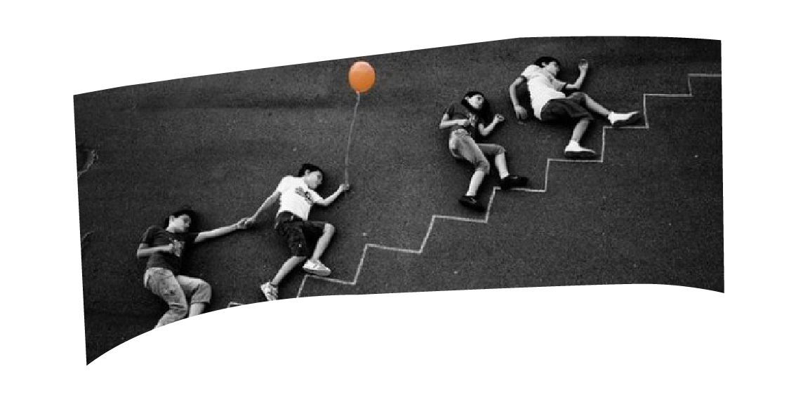
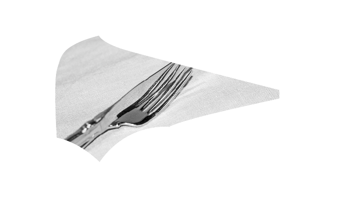

Verbeelding van de mens of toch van het brein? 
Hoofdstuk 2
- 2.1 Het idee van het beeld
- 2.2 Het gebruik van handelingen bij een verbeelding 
De menselijke verbeeldingskracht of fantasie is het vermogen om zich in situaties in te leven of gebeurtenissen of entiteiten te bedenken die niet bestaan, die onmogelijk kunnen bestaan of waarvan het bestaan onbewezen is. Dat wat wordt voortgebracht door de verbeeldingskracht, of ook wel eveneens 'een fantasie' genoemd. Graag zou ik dit hoofdstuk willen inleiden met een stukje tekst uit het boek ‘Tem je geest’ van Ruby Wax. Dit omdat ik het zelf niet op een betere manier zou kunnen verwoorden, ik zou het wel graag willen proberen te versterken of uitleggen in de rest van dit hoofdstuk.
- “Veel van wat je ziet, wordt geproduceerd door je hersenen, ingekleurd door zoiets als computer-gegenereerde beelden in een film. Slechts een heel klein deel van de input in je occipitaalkwab komt rechtstreeks uit de buitenwereld, de rest komt van je opgeslagen interne geheugen en andere processen. Zie het gebied in je visuele cortex als een bioscoop die aan de hand van wat er aan informatie binnenkomt een beeld projecteert. In werkelijkheid zien we de wereld in losse kiekjes en een deel in je hersenen zorgt ervoor dat het lijkt alsof ze constant bewegen. Er zijn ongeveer zeventig afzonderlijke gebieden aan het werk om een samenhangend beeld van de wereld te creëren; een deel draagt bij aan de kleur, een ander aan beweging, weer een ander geeft de randen weer, er is er een die vormen oppikt en een ander die schaduwen vangt. Er is geen enkel los deel dat het hele beeld vormt. En in compleet andere gebieden krijgen de beelden een naam, een associatie of een emotioneel label ”.
2.1 Het idee van het beeld
We lijken de omgeving waarin we ons begeven te overzien. Uit de fysische eigenschappen van de mens blijkt echter hoe weinig men daadwerkelijk ziet. Zien bestaat voor een groot deel uit aannames, het verbinden en invullen van incomplete gegevens. Het brein is in die zin erg lui, weinig beelden zijn uit het heden afkomstig, een bekende omgeving is opgebouwd uit beelden uit het verleden. Wat de aandacht vraagt, krijgt en bijdraagt aan de samenstelling van het beeld is subjectief. De focus van ons blikveld vormt slechts een klein deel van ons gehele gezichtsveld, wat er buiten valt wordt toch ingevuld. Zoals het deel dat we bewust ervaren een heel klein deel is van de werkelijke indrukken. Het grootste deel wordt voor ons ingevuld of eigenlijk wordt er niet zoveel ingevuld, het is de suggestie van invulling. Afstand, dichtheid, structuren van gebouwen, materiaal, kleur en vorm. Hoe weinig houvast heeft het onbewuste brein nodig om een vloeiend beeld te vormen of om de gaten te vullen zodat de suggestie voldoende is voor de ervaring van een samenhangend beeld. Het beeld van de fysieke omgeving is minder concreet en tastbaar dan gesuggereerd. Het idee van het beeld biedt het bewuste brein voldoende houvast en vertrouwen om zich te kunnen begeven en bewegen in die omgeving. De vraag is echter of de voorstelling in het brein een beeld is. Als ik bijvoorbeeld een niet aanwezige tafel probeer te visualiseren, dan is er geen beeld. In eerste instantie denk ik dat er een beeld is. Op het moment dat ik het probeer te begrijpen, als ik ga beschouwen hoe dit beeld zich manifesteert of ik wil inzoomen op de materialisatie van de tafel, verdwijnt het. Ik kan het beeld nog net proeven. Er is echter wel degelijk een idee van de visuele aspecten van het beeld zoals kleur, materiaal, textuur, de afmetingen en ook andere niet visuele eigenschappen zoals een idee van het gewicht, hoe het zou kunnen voelen als ik de tafel zou aanraken en ook hoe deze zich verhoudt tot mijzelf (en niet hoe ik mij verhoud tot de tafel). Ik zie het niet voor me als een visuele projectie. Ik denk dat ik het voor mij zie, maar het is het idee van zien. Het blijkt verwarrend de visualisatie zelf te aanschouwen en te beschouwen. Kan ik echt niet in beelden denken of kan ik mij geen voorstelling maken van hetgeen ik zojuist ‘gezien’ heb? Dat is hetzelfde als ik bijvoorbeeld een affiche moet gaan ontwerpen. Dan heb ik het helemaal in mijn hoofd zitten hoe het er uit zou moeten te komen zien, van typografie, tot beeld, tot vormen. Maar wanneer ik daadwerkelijk aan de slag ga en ik dus denk dat ik mijn visualisatie die ik in mijn hoofd heb zitten snel gerealiseerd zou kunnen hebben, dan gaat het altijd mis. Want het komt er niet uit. Het lukt mij niet. Dan wordt ik gefrustreerd en snap ik niet zo goed waarom het dan niet lukt. Is het dan slechts een verbeelding waarvan ik niet weet hoe ik die realiseerbaar moet maken? Is het echt zo ongrijpbaar? Of denk ik dat ik het beeld voor me zag en blijkt dit niet zo te zijn?2.2 Het gebruik van handelingen bij een verbeelding
 Soms, zeg maar gerust vaak, maak je bij een verbeelding gebruik van handelingen. Om een route uit mijn hoofd te leren duurt het namelijk niet zo lang voordat mijn rechterhand te hulp schiet om de virtuele route fysiek na te lopen met mijn wijsvinger, om deze in de lucht te tekenen. Of om voor mij te kunnen zien hoeveel bochten een paperclip heeft, tel ik de bochten met mijn hand. Je hand biedt veel hulp bij opsommingen en houvast bij het tellen met het oog van boeken in een boekenkast of om de 7e verdieping aan de buitenzijde van een gebouw te vinden. Tenminste, die dingen zijn voor mij heel gebruikelijk. Soms sta ik er zelf van te kijken dat ik mijn hand nodig heb om iets te kunnen tellen. Waarom kan ik het niet met mijn blote oog tellen? Waarom moeten we met gebaren een bevestiging krijgen of hebben we het nodig om die bevestiging te krijgen? Taal en gebaren kunnen ingezet worden voor zowel het uitdrukken van gedachten als voor een externe overdracht. De vraag is echter of automatische reflexmatige gebaren meer intern gericht zijn. Gebruikt men onbewuste en automatische gebaren met de handen om gedachten te ondersteunen? Gaat het dan om abstracte aspecten en emoties? Één ding is zeker. Je maakt deze gebaren ook wanneer de ander je niet ziet, zoals dat ik ze ook maak bij een heel simpel en niet boeiend telefoongesprek.
Soms, zeg maar gerust vaak, maak je bij een verbeelding gebruik van handelingen. Om een route uit mijn hoofd te leren duurt het namelijk niet zo lang voordat mijn rechterhand te hulp schiet om de virtuele route fysiek na te lopen met mijn wijsvinger, om deze in de lucht te tekenen. Of om voor mij te kunnen zien hoeveel bochten een paperclip heeft, tel ik de bochten met mijn hand. Je hand biedt veel hulp bij opsommingen en houvast bij het tellen met het oog van boeken in een boekenkast of om de 7e verdieping aan de buitenzijde van een gebouw te vinden. Tenminste, die dingen zijn voor mij heel gebruikelijk. Soms sta ik er zelf van te kijken dat ik mijn hand nodig heb om iets te kunnen tellen. Waarom kan ik het niet met mijn blote oog tellen? Waarom moeten we met gebaren een bevestiging krijgen of hebben we het nodig om die bevestiging te krijgen? Taal en gebaren kunnen ingezet worden voor zowel het uitdrukken van gedachten als voor een externe overdracht. De vraag is echter of automatische reflexmatige gebaren meer intern gericht zijn. Gebruikt men onbewuste en automatische gebaren met de handen om gedachten te ondersteunen? Gaat het dan om abstracte aspecten en emoties? Één ding is zeker. Je maakt deze gebaren ook wanneer de ander je niet ziet, zoals dat ik ze ook maak bij een heel simpel en niet boeiend telefoongesprek.
Bewuste gebaren zijn meer extern gericht, dit is ten behoeve van een overdracht. Deze gebaren zijn niet volledig bewust, je grijpt ongemerkt en automatisch naar dit hulpmiddel, je bent je meer bewust van het uitvoeren van de handelingen. Om iets uit te leggen, positioneer je het denkbeeldige object of situatie in de ruimte tussen je handen. Zoals je dat doet bij handelingen van koken, om voor te doen hoe je sushi stokjes moet gebruiken of een oester opent. Dit betreft niet alleen objecten die te hanteren zijn of waarvan deze schaal 1:1 in de handen passen. Het hele lichaam kan ingezet worden om iets uit te leggen. Het fysiek uitbeelden is ook geschikt om de kracht of finesse te tonen waarmee een handeling dient te worden uitgevoerd. Eigenlijk zijn onze fysieke handgebaren, bewust of onbewust, een manier van (visuele) communicatie. Communicatie is een activiteit waarbij betekenissen worden uitgewisseld door op elkaars signalen te reageren, terwijl onze handgebaren bij een activiteit en/of verbeelding een versterking is om tot iets te komen of wat je wilt vertellen.
Als ik bijvoorbeeld papier dubbelvouw, dan gebruik ik mijn ogen alsof het mijn handen zijn. Om de richting van de fictieve handeling aan te geven, bewegen mijn ogen ook daadwerkelijk mee. Ze controleren als het ware of mijn handen de hoekjes wel precies op elkaar liggen voor de vouw plaats zal vinden met behulp van mijn handen. Of als ik een 3D figuur in een 2D tekening mentaal wil roteren kan ik, in plaats van het figuur voor mijn ogen te draaien, deze ook tussen mijn handen nemen en met mijn handen draaien. Is de mentale projectie dan in de fysieke ruimte geplaatst? Het brein gebruikt de fysieke ruimte om er informatie op te slaan en er uit op te diepen om het bewuste brein te ontlasten.